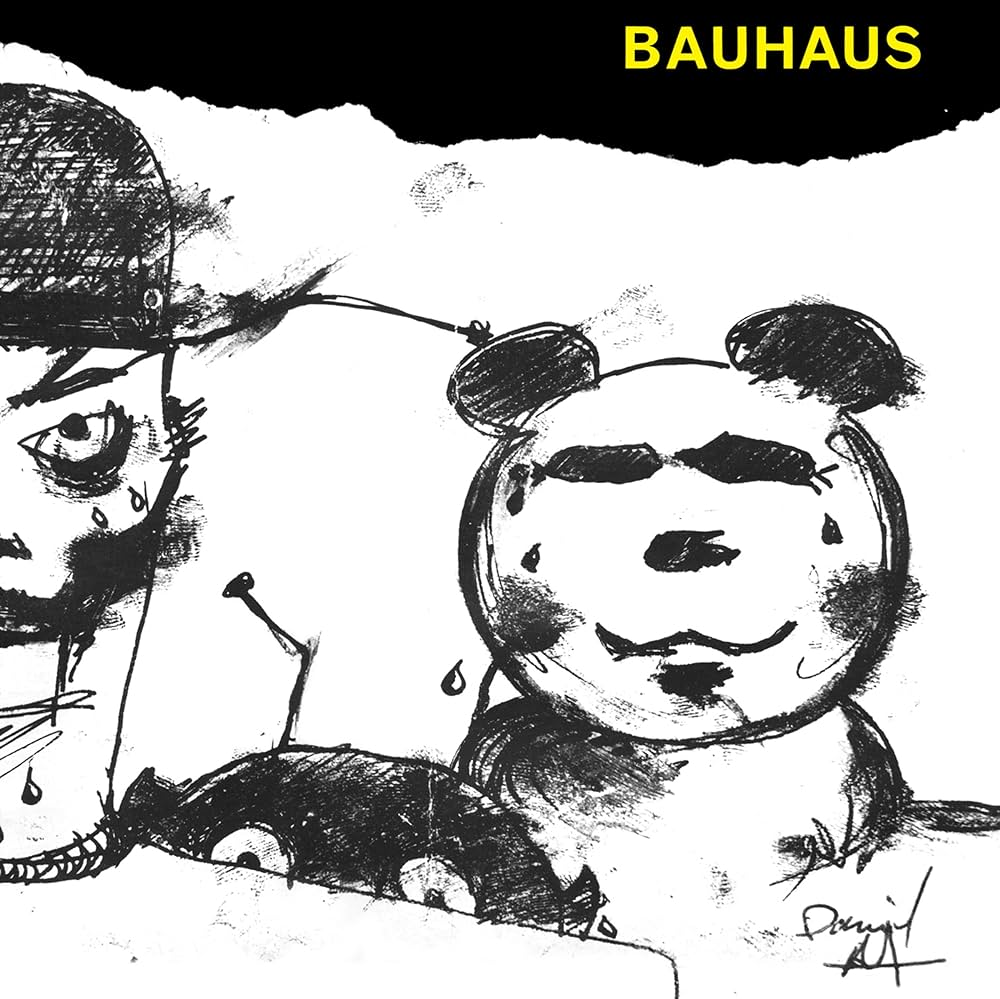

1- Daydream Nation
Sonic Youth

Este foi o quinto álbum de estúdio da banda Sonic Youth, fez muito sucesso quando foi lançado e sua qualidade é incontestável até hoje. Os momentos longos onde o instrumental prevalece e a maneira única que a Guitarra aparece nas músicas dessa banda é com certeza algo que a faz ser atemporal. Guardo um carinho especial pela música Eric's Trip,já que, por coincidência, é meu nome também.
2- Mask
Bauhaus

Bauhaus, em especial esse álbum, na minha visão, é a essencia do gótico e a atmosfera que o gênero almeja. O vocal de Peter Murphy é algo único que acrescenta demais para o conjunto funcionar bem.
3- On Fire
Galaxie 500

Fugindo um pouco do Punk em si, mas ainda carregando uma influência dos movimentos que surgiram a partir dele como o Noise e o No-wave esse álbum traz uma atmosfera melancólica e única, evocando nostalgia também com suas referências a filmes, carros e programas de TV dos anos 80/90 em suas canções.